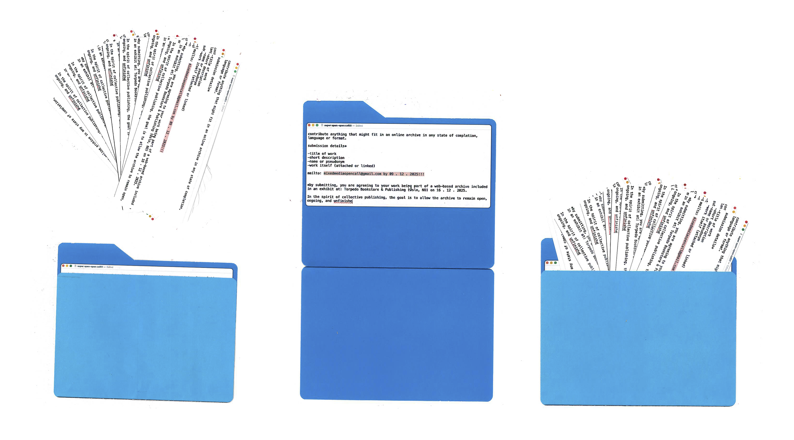

Live Open Call
Designed and built an interface for gallery visitors to scan a QR code and send text and images to a live receipt printer, bridging digital and physical interaction. The project started as an open call experiment in mail art publishing, with posters hung around London and Oslo inviting people to submit whatever they were working on. Submissions were unified into a long receipt format, evolving into a live interactive installation.
2025 · Designer and Developer

Open call poster

Receipt output from submissions
Site interface recording
Live open call in action
Receipt printer output